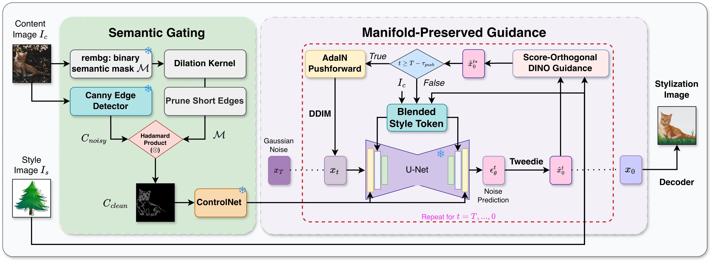
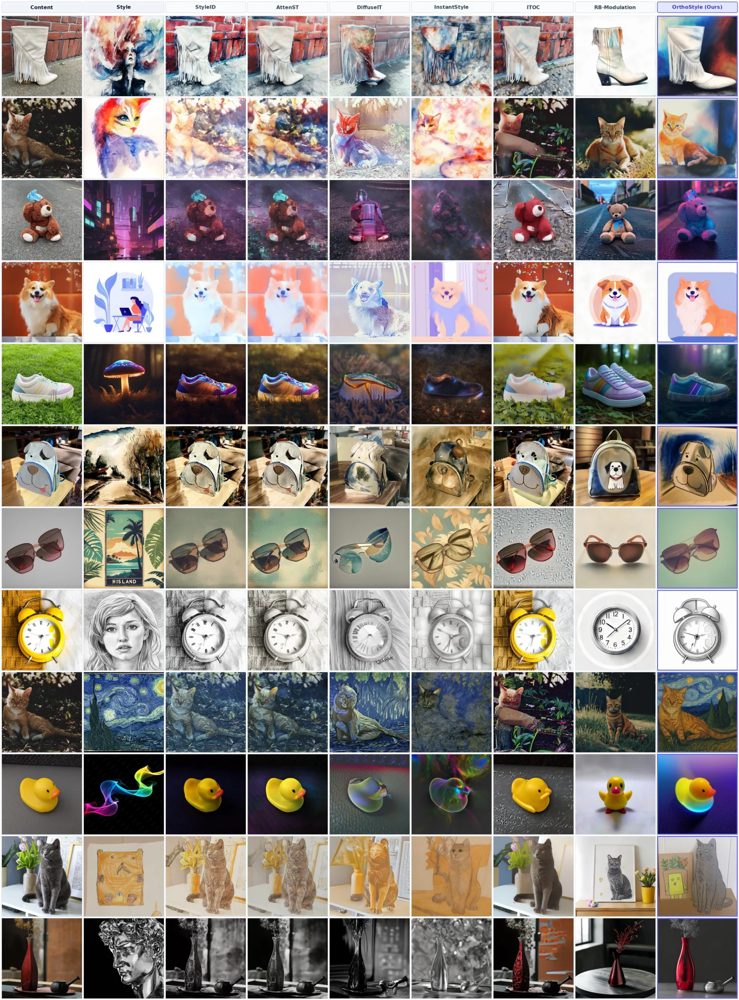
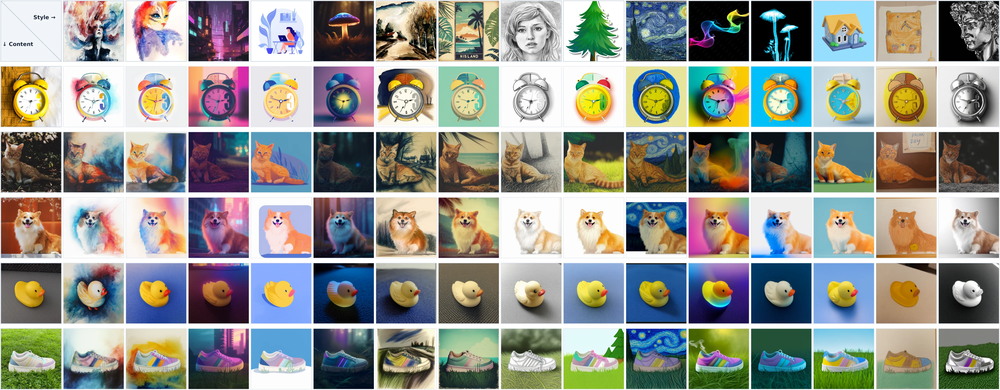
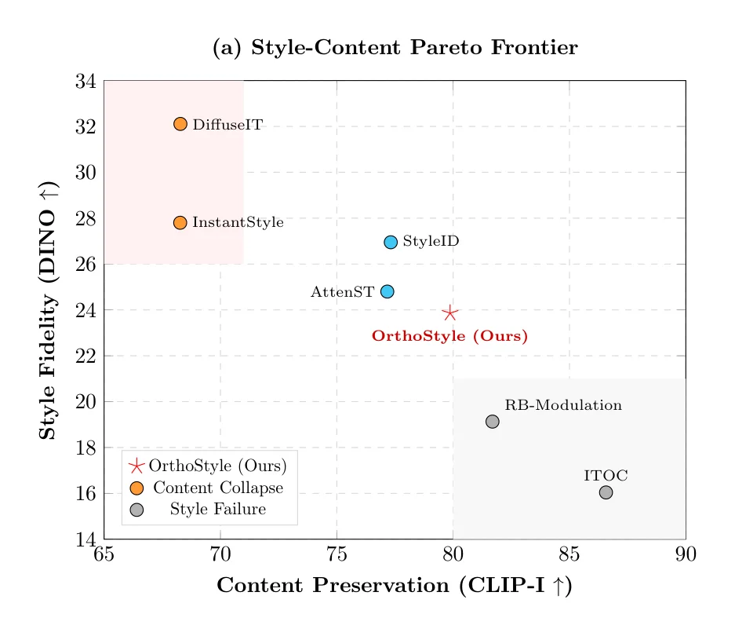
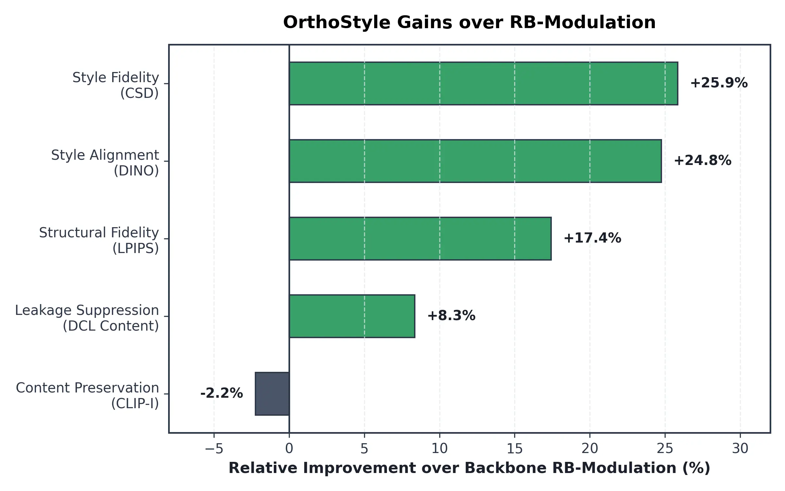
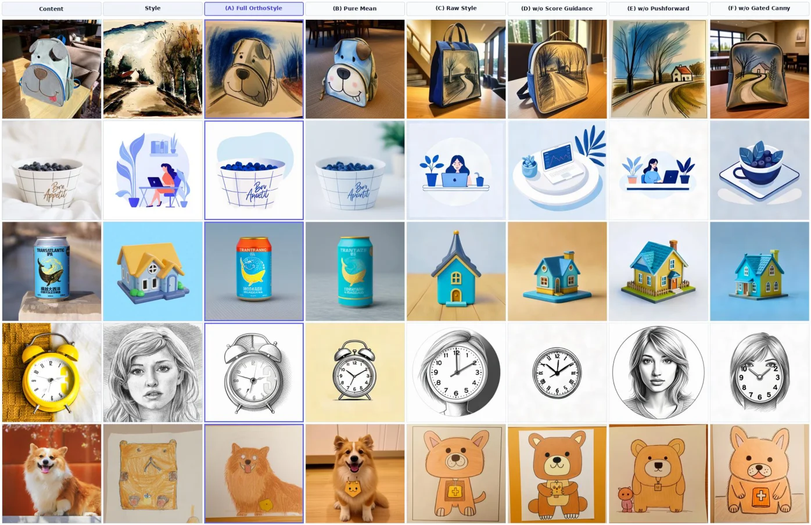
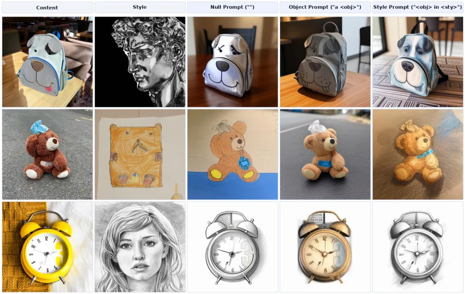

OrthoStyle: Manifold-Preserving Training-Free Style Transfer via Score-Orthogonal Guidance
Interactive Demo
Select one content image and one style reference to generate a stylization image.
Content Image
Style Image
Choose a content and a style
The matching output will appear here.Abstract
Reference-based style transfer with diffusion models aims to synthesize artistic textures while preserving the geometry and semantics of a target image. However, training-free methods face a trade-off between style fidelity and content preservation: strong style injection can distort structure and cause content leakage, while conservative transfer often leads to under-stylization. To solve this trade-off, we introduce OrthoStyle, a training-free framework that addresses this trade-off without network fine-tuning or DDIM inversion. OrthoStyle consists of three components: Semantic Gating to preserve structural and semantic cues; Score-Orthogonal Guidance to project style gradients orthogonally to the diffusion score direction, preserving the sampling trajectory near the data manifold; and an Early Step Controller that applies AdaIN-based clean-latent pushforward to establish color and layout before fine-grained stylization. Extensive quantitative and qualitative comparisons with both OC-based baselines and stylization methods show that OrthoStyle achieves a favorable balance between style fidelity and content preservation while maintaining structural consistency. Most notably, it completely outperforms the baseline that uses the same backbone.
Methodology

Semantic Gating
Extracts semantically relevant structural cues from the content image while suppressing irrelevant details, providing a cleaner condition for structure-preserving stylization.
Score-Orthogonal DINO Guidance
Improves style fidelity using DINO-based guidance projected orthogonally to the diffusion score, reducing interference with the model's native denoising direction.
Early-Step Controller with Blended Style Tokens
Injects blended style tokens during early denoising steps to establish global appearance while preserving fine-grained style information throughout generation.
Qualitative Visualization
Visual comparisons demonstrating OrthoStyle's superiority in style fidelity, stroke dynamics, and content geometry retention against representative baselines.


Quantitative & Trade-off Analysis
Style-Content Pareto Frontier
OrthoStyle lies on a favorable style-content Pareto frontier, balancing content preservation (CLIP-I) and style fidelity (DINO) while avoiding both content collapse and under-stylization.

OrthoStyle vs. RB-Modulation
OrthoStyle achieves substantial gains over RB-Modulation in style fidelity, alignment, structural preservation, and leakage suppression, with only a marginal change in content preservation under the same Stable Cascade backbone.

Ablation Studies
Ablation on Core Components
Visual and quantitative ablation verifying the essential contributions of Semantic Gating, Score-Orthogonal DINO Guidance, and the Early Step Controller.

Ablation across Prompt Levels
Evaluation of stylization stability and fidelity across varying prompt conditioning levels, highlighting robust performance under diverse textual guidance.

BibTeX
@article{orthostyle,
title = {OrthoStyle: Manifold-Preserving Training-Free Style Transfer via Score-Orthogonal Guidance},
author = {Anonymous},
year = {2026}
}